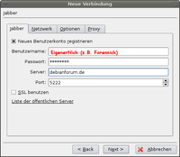
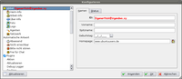
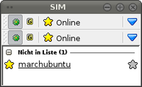

SIM
Archivierte Anleitung
Dieser Artikel wurde archiviert, da er - oder Teile daraus - nur noch unter einer älteren Ubuntu-Version nutzbar ist. Diese Anleitung wird vom Wiki-Team weder auf Richtigkeit überprüft noch anderweitig gepflegt. Zusätzlich wurde der Artikel für weitere Änderungen gesperrt.
Zum Verständnis dieses Artikels sind folgende Seiten hilfreich:
Simple Instant Messenger (SIM) ist ein Open Source-, Plugin-basierender, Multi-Protokoll-Instant Messaging-Client. Er ist für Linux, Microsoft Windows und Apple Mac OS X verfügbar und baut auf dem Qt-Framework auf. SIM hat unter den Instant Messengern mit die größte Funktionsvielfalt aufzuweisen. Nachdem der Hauptentwickler die Entwicklung eingestellt hat, haben sich neue Programmierer gefunden, die SIM unter dem Namen SIM-IM weiterentwickeln.
Er unterstützt die Protokolle der Dienste AIM, ICQ, XMPP (Jabber), MSN und YIM, LiveJournal und ist in mehreren Sprachen verfügbar.
Ein besonderes Feature von SIM, das der offizielle ICQ-Client nicht besaß, war das Anzeigen von Kontakten, die ihren Status auf „unsichtbar“ gesetzt haben und so normalerweise als „offline“ erscheinen würden. Nach einem Protokoll-Update seitens AOL ist dieses Feature aber momentan leider nicht mehr verfügbar... (Quelle: Wikipedia.de)
|  |
| Account |
Installation¶
Zur Installation [1] ist folgendes Paket notwendig:
sim (universe )
 mit apturl
mit apturl
Paketliste zum Kopieren:
sudo apt-get install sim
sudo aptitude install sim
Weitere Pakete werden dabei automatisch installiert.
SIM einrichten¶
Nach dem Programmstart wählt man zuerst das Protokoll aus, für welches ein Account angelegt werden soll - in diesem Beispiel XMPP (Jabber). Wird ein neuer Zugang angelegt im folgenden Fenster ein Häkchen setzen bei der entsprechenden Option. Ebenfalls ein Häkchen bei SSL setzen.
Folgende Angaben sind notwendig:
Benutzername - sofern nicht besetzt empfiehlt sich der Forennick,
Passwort - ein sicheres Kennwort,
Server - Wahl eines geeigneten XMPP-Servers
Port - Falls der Internetzugang über einen Router erfolgt, müssen eventuell Ports freigeschaltet werden.
Ist der gewünschte Nick noch verfügbar, bekommt man eine entsprechende Meldung und wird mit dem Server verbunden.
|  |
| Konfiguration |
Konfiguration¶
Dieser Artikel beschäftigt sich nur mit der Grundkonfiguration - weitergehende Einstellungsmöglichkeiten sind vorhanden und erschließen sich logisch.
Kontakte hinzufügen¶
Das Hinzufügen von Kontakten in den Simple Instant Messenger erfolgt per "Menü -> Suchen/Finden" und in der folgenden Maske z.B. die JID eingeben. Falls diese nicht bekannt ist die Suchfunktion nutzen (Jabber User Directory). Eventuell eine Gruppenzugehörigkeit angeben z.B. UbuntuUsers.
SIM online¶
Um in den Online-Modus zu gelangen in der Titelleiste auf den grauen Offline-Stern klicken und im folgenden Dialog auswählen, welcher Verbindungsstatus für das Konto gelten soll. Für die eigenen Kontakte wird dieser ebenfalls angezeigt (siehe Legende unten).
Benutzerinformationen¶
Unter "Menü -> Einstellungen" können Informationen zum eigenen Zugang eingesehen und geändert werden. So gibt es z.B. die Möglichkeit Avatare hochzuladen, das verwendete Programm zu sehen oder den Verbindungsstatus. Außerdem können in diesem Menü Informationen über die Kontakte abgerufen werden.
Automatische Antworten¶
Automatische Antworten z.B. wenn der User nicht zu erreichen ist, können in diesem Fenster abgeändert werden.
|  |
| Kontakte |
Legende¶
| Legende | |
| Symbol | Beschreibung |
| Menü | |
| offline Kontakte anzeigen ein/aus | |
| Gruppen anzeigen / bearbeiten / erstellen | |
| Kontakt online | |
| Kontakt offline | |
| Kontakt nicht verfügbar | |
| Kontakt ist abwesend | |
| Kontakt ist beschäftigt | |
 (wird kaum noch aktualisiert)
(wird kaum noch aktualisiert) 
- Erstellt mit Inyoka
-
 2004 – 2017 ubuntuusers.de • Einige Rechte vorbehalten
2004 – 2017 ubuntuusers.de • Einige Rechte vorbehalten
Lizenz • Kontakt • Datenschutz • Impressum • Serverstatus -
Serverhousing gespendet von